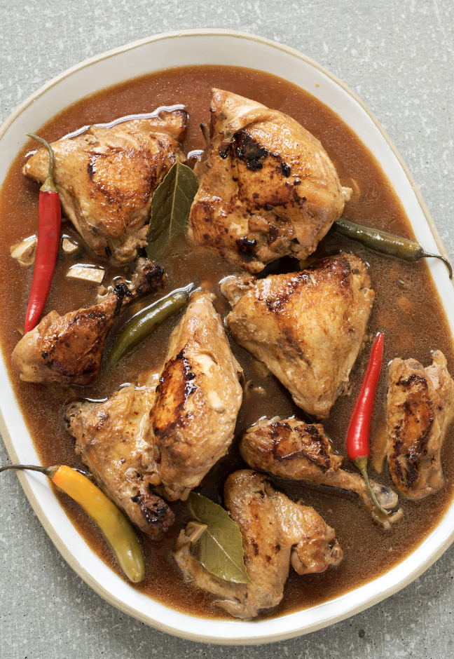
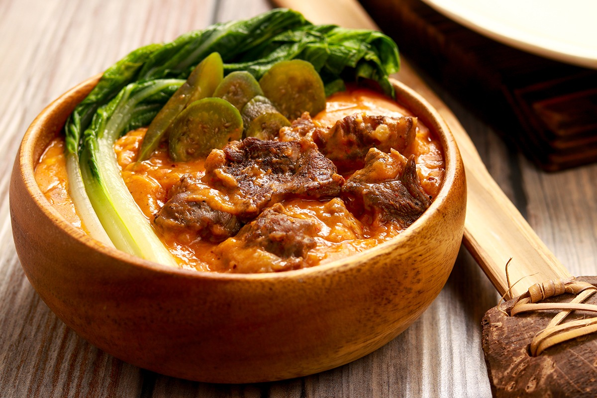
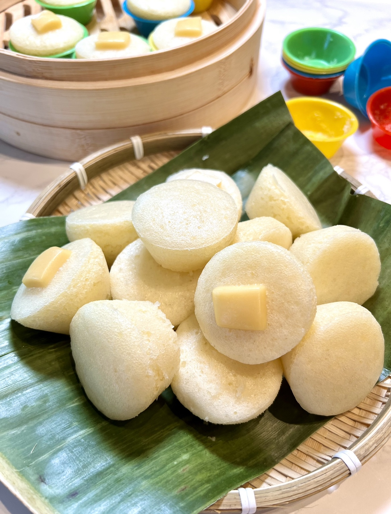

Our Signature Dishes
Adobo
Ingredients
- 1 kg chicken/pork
- ½ cup soy sauce
- ½ cup vinegar
- 1 onion, chopped
- 1 garlic, minced
- 1 bay leaf
- 1 tsp peppercorn
- 1 cup water
Cooking Procedure
Marinate meat in soy sauce, garlic, and pepper. Sauté garlic & onion, add the meat, vinegar, bay leaf, and simmer until tender.
Bulalo
Ingredients
- 1.5 to 2 kg beef shank with bone marrow
- 1 onion
- 2 corn cobs
- Pechay or cabbage
- Fish sauce, salt & pepper
Cooking Procedure
Boil beef shank until tender, skim fat, add corn & seasonings. Add vegetables last before serving hot.
Kare-Kare
Ingredients
- 1 kg oxtail/tripe
- 2 eggplants
- String beans
- Banana heart
- Peanut butter
- Annatto seeds
- Ground rice
Cooking Procedure
Boil meat until tender, sauté annatto & peanut butter, add veggies, and serve with bagoong (shrimp paste).
Sinigang na Baboy

Ingredients
- 1 kg pork ribs
- 1 pack tamarind mix
- 2 tomatoes
- 1 onion
- Kangkong leaves
- Sitaw (string beans)
- Radish
Cooking Procedure
Boil pork with onion and tomatoes. Add tamarind mix, vegetables, and simmer until cooked. Serve sour and hot.
Pancit Canton
Ingredients
- 500g pancit canton noodles
- Chicken, pork, or shrimp
- Cabbage & carrots
- Soy sauce
- Oyster sauce
- Garlic & onion
Cooking Procedure
Sauté garlic & onion, add meat & vegetables. Toss in noodles and season with soy & oyster sauce.
Lechon Kawali

Ingredients
- 1 kg pork belly
- Salt & pepper
- Garlic
- Bay leaves
- Cooking oil (for frying)
Cooking Procedure
Boil pork belly with garlic & spices until tender. Deep-fry until crispy golden brown. Serve with lechon sauce.
Halo-Halo

Ingredients
- Shaved ice
- Sweetened beans & fruits
- Leche flan
- Ube halaya
- Evaporated milk
- Ice cream
Preparation
Layer beans, fruits, shaved ice, and milk. Top with leche flan, ube halaya, and a scoop of ice cream.
Laing

Ingredients
- 500g dried taro leaves
- 1 can coconut milk
- 200g pork, sliced
- Chili peppers
- Garlic & onion
- Salt & pepper
Cooking Procedure
Sauté garlic, onion, and pork. Add coconut milk and taro leaves, simmer until leaves are soft. Season with salt and chili peppers.
Bicol Express
Ingredients
- 500g pork belly
- 1 can coconut milk
- Chili peppers
- Garlic & onion
- Shrimp paste (optional)
- Salt & pepper
Cooking Procedure
Sauté garlic and onion with pork. Add coconut milk and chili peppers. Simmer until tender. Season with shrimp paste if desired.
Puto
Ingredients
- 2 cups rice flour
- 1 cup sugar
- 1 tbsp baking powder
- 1 cup coconut milk
- Cheese slices (optional)
Cooking Procedure
Mix flour, sugar, and baking powder. Add coconut milk to form batter. Pour into molds, top with cheese, and steam until cooked.
Longganisa

Ingredients
- 500g ground pork
- 1 tbsp sugar
- 2 tbsp soy sauce
- 1 tsp pepper
- Garlic, minced
Cooking Procedure
Mix all ingredients, form into small links. Fry until browned and cooked through. Serve with garlic rice.
Tocino

Ingredients
- 500g pork shoulder, sliced
- ¼ cup sugar
- 2 tbsp soy sauce
- 1 tbsp salt
- 1 tsp garlic powder
- Red food coloring (optional)
Cooking Procedure
Marinate pork with all ingredients for at least 4 hours. Fry until caramelized and serve with rice.